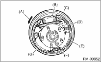
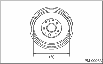
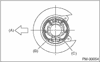
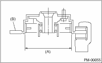

PERIODIC MAINTENANCE SERVICES > Brake Lining and Drum
1. Remove the brake drum and check for fluid leaks from the wheel cylinder.
If fluid leaks are found in the wheel cylinder, check the wheel cylinder and repair or replace it.
2. Inspect the brake shoes for damage or deformation and check the brake linings for wear beyond limit values.
CAUTION:
• Always replace the wheel leading and trailing brake shoes for the left and right wheels at the same time.
• When replacing either the left or the right brake assembly, always replace the leading shoe and the trailing shoe of one side.
Thickness of lining (except for back metal):
Standard
4.1 mm (0.161 in)
Limit
1.5 mm (0.059 in)

|
(A) |
Direction of drum rotation (Forward) |
|
(B) |
Wheel cylinder |
|
(C) |
Upper shoe return spring |
|
(D) |
Adjusting lever |
|
(E) |
Trailing shoe |
|
(F) |
Lower shoe return spring |
|
(G) |
Leading shoe |
3. Check the brake drum for wear, dents or other damage.
If the inside surface of brake drum is streaked, correct the surface with emery cloth (#200 or more). If it is unevenly worn or tapered, or the outer surface of the brake drum is damaged, correct or replace it.
Brake drum inside diameter:
Standard
228.6 mm (9.000 in)
Limit
230.6 mm (9.079 in)
If the deformation or wear of back plate, shoe, etc. is noticeable, replace problem parts.

|
(A) |
Inside diameter |
2. PARKING BRAKE (REAR DISC BRAKE)
Inspect the brake linings and disc rotor of both sides of the rear brake at the same time by removing disc rotor.
1. Inspect the brake shoes for damage or deformation and check the brake linings for wear beyond limit values.
CAUTION:
Always replace both primary and secondary brake shoes for the left and right wheels at the same time.
Thickness of brake lining (except for back metal):
Standard
3.2 mm (0.126 in)
Limit
1.5 mm (0.059 in)

|
(A) |
Forward |
|
(B) |
Brake shoe (Primary side) |
|
(C) |
Brake shoe (Secondary side) |
2. Check the inside of disc rotor for wear, dents or other damage. If the inside surface of dick rotor is streaked, correct the surface with emery cloth (#200 or more). If it is unevenly worn or tapered, correct or replace it.
Brake drum inside diameter:
Standard
170 mm (6.69 in)
Limit
171 mm (6.73 in)

|
(A) |
Inside diameter |
|
(B) |
Disc |
3. If the deformation or wear of back plate, shoe, etc. is noticeable, replace problem parts.
4. When the shoe return spring tension is excessively weakened, replace it.